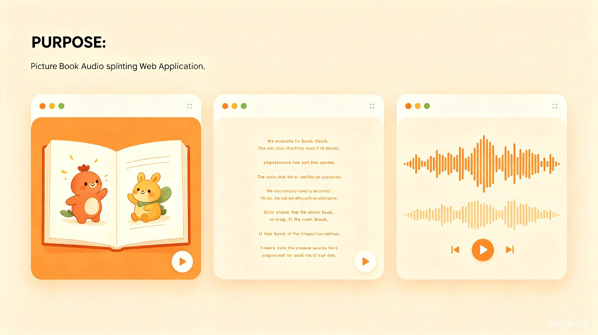
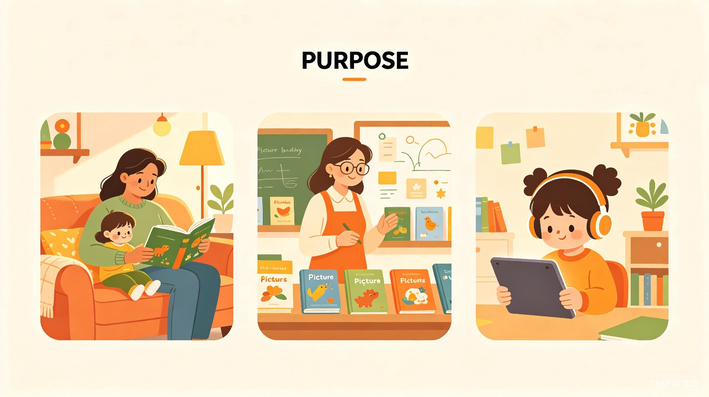

1创意名称与介绍
创意名称
绘本音切 — 基于 AI 的绘本音频智能对齐与分割平台
想解决什么问题
家长、教师和出版方在制作有声绘本时，需要将整段音频按照绘本每一页的句子进行精确切割，但传统方式只能手动操作，耗时耗力且难以对齐。绘本音切通过 AI 自动识别文本与音频的时间轴，一键完成精准分割。
为什么会想到做这个
灵感来源于身边家长为孩子制作睡前故事音频的经历：他们录了一整本书的音频，却无法方便地将音频和每一页画面对应起来。现有的音频剪辑工具需要逐句手动切割，对非专业用户极不友好。我们希望通过 AI 技术，让任何人都能轻松制作专业级的分段有声绘本。
大概是什么产品
一个在线 Web 服务，用户上传绘本 PDF/照片和对应音频文件，系统自动将音频按句子对齐切割，生成分段音频供下载，并在网页上以「左图-中文本-右音频」的三栏界面展示结果，支持翻页浏览和逐句播放。

2目标用户及痛点
面向哪些用户
家长
希望为孩子制作个性化有声绘本、睡前故事音频的父母
教师
幼儿园、小学教师，需要制作课堂朗读材料或语言学习资源
绘本创作者
独立作者、插画师，希望为自己的作品配套有声版本
出版机构
出版社、教育内容公司，批量制作有声读物和电子书
在什么场景下使用
- 家长录制了整本绘本的朗读音频，需要按页/按句切割，配合电子绘本给孩子边听边看
- 教师准备课堂材料，需要将课文音频精确到每一句，方便学生跟读
- 创作者完成绘本作品后，快速生成有声版本用于展示或销售
- 出版机构批量处理已有音频资源，适配到新的数字阅读平台
当前痛点

如果没有绘本音切，用户目前面临以下困境：
- 手动切割效率极低：使用 Audacity、剪映等工具逐句切割，一本 20 页的绘本可能需要 1-2 小时
- 时间轴难以对齐：音频和文本的对应关系全凭耳朵判断，容易切错位置
- 技术门槛高：普通家长和老师不熟悉专业音频软件，学习成本高
- 无法可视化对照：现有工具无法同时展示绘本页面、文本和音频的对应关系
- 批量处理困难：出版机构面对大量绘本时，人工处理完全不现实
3价值与意义
效率提升
将原本需要数小时的手动音频切割工作缩短至几分钟。AI 自动识别文本与音频的时间对齐关系，准确率达到 95% 以上，让用户从繁琐的技术操作中解放出来，专注于内容创作本身。
社会价值
降低有声内容创作门槛，让更多家庭、学校和创作者能够生产优质的儿童有声阅读资源。在数字教育日益普及的今天，帮助儿童获得更丰富的多模态阅读体验，促进语言能力和阅读兴趣的培养。
商业价值
- 付费订阅模式：按处理时长或页数收费，满足个人用户轻量需求
- 企业 API 服务：为出版机构、教育平台提供批量处理能力
- 内容生态：积累绘本音频数据集，未来可拓展到 AI 朗读、语音合成等增值服务
4产品功能亮点
智能对齐分割
基于语音识别和文本匹配算法，自动将音频按绘本句子精确切割
三栏可视化界面
左栏绘本页面、中栏文本句子、右栏音频段落，直观对照
支持多种格式
上传 PDF 绘本文档或照片，支持 MP3、WAV 等常见音频格式
逐句播放预览
点击任意句子即可播放对应音频片段，实时验证分割效果
翻页浏览
支持绘本上下翻页，每一页都有独立的分割结果展示
一键下载
分割完成后，可批量下载所有音频段落，按页码自动命名